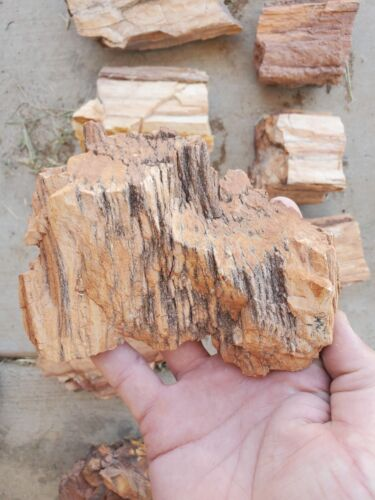

New here?

New to rockhounding and don't know where to start? Not to worry, we will show you the ropes. Click below to head over to our "Getting Started" guide
Getting StartedRocks & Minerals In Arizona


Arizona rockhounding maps to hunt for crystals, gemstones, minerals, and ores. Arizona is known for its diverse and rich rockhounding opportunities. From the vast desert landscapes to the scenic mountain ranges, rockhounds can find a wide variety of minerals and gemstones. Popular finds in the state include fire agates, known for their unique iridescent colors, and petrified wood, remnants of ancient forests turned into stone. Additionally, Arizona is famous for its turquoise deposits, which are highly sought after for their vibrant blue and green hues.
Sponsored Dig Site

Own a digsite you would like to advertise in Arizona? Contact us for more information about being our sponsor of the month! Email sponsors@rockhounding.org for more information.
Advertise With UsPlease always bring appropriate attire and do research before venturing out to rock hunt and crystal hunt. Also, be sure to verify that the location you want to hunt at is available for public access. Rockhounding.org does our best to verify, but it is your responsibility to verify as well because sometimes things change. We are not liable for any actions you take from the information you find on this site.
Must Have Rockhounding Tools


Keeping accurate records of Rockhounding & Gemstone Hunting Locations is a community effort! Know of a good spot that is missing from our maps? Feel free to submit it below. Thank you for your contributions to the rockhounding community!
Popular Rocks, Crystals, & Gemstones In Arizona
-
 Turquoise
TurquoiseTurquoise is a popular gemstone with vibrant blue and green hues, found in the Kingman and Morenci mines.
Read More -
 Fire Agate
Fire AgateFire agates are known for their unique iridescent colors and can be found in the Saddle Mountain area.
Read More -

Petrified Wood
Petrified wood, remnants of ancient forests turned into stone, can be found in the Petrified Forest National Park.
Read More -
 Peridot
PeridotPeridot is a bright green gemstone that can be found on the San Carlos Apache Reservation.
Read More -

-

-

-
 Dinosaur Tracks
Dinosaur TracksDinosaur tracks, a type of trace fossil, can be found in the Moenkopi Formation near Tuba City.
Read More -

Popular Areas In Arizona
-
 Vulture Gold Mine
Vulture Gold MineLocated near Wickenburg, Vulture Gold Mine is a popular spot for gold prospecting and offers guided tours.
Read More -
 Peridot Mesa
Peridot MesaPeridot Mesa on the San Carlos Reservation is known for its abundance of peridot, a green gemstone.
Read More -
 Saddle Mountain
Saddle MountainSaddle Mountain is a popular location for finding fire agate, a colorful and iridescent gemstone.
Read More -
 Petrified Forest National Park
Petrified Forest National ParkThis national park is famous for its large deposits of petrified wood and offers many educational resources.
Read More -
 Diamond Point
Diamond PointDiamond Point, located in the Tonto National Forest, is known for its quartz crystal deposits.
Read More -
 Morenci Mine
Morenci MineThe Morenci Mine is one of the largest copper mines in the US and is also a source of high-quality turquoise.
Read More
Geology of Arizona
Arizona is home to a fascinating and diverse geological landscape, boasting the iconic Grand Canyon, striking red rock formations, and vast stretches of desert. The state's geology is the result of billions of years of complex geological processes, including volcanic activity, sediment deposition, and the relentless work of erosion.
The Grand Canyon, one of Arizona's most famous landmarks, offers a unique window into the state's geological history. Carved by the Colorado River over millions of years, the canyon walls reveal layers of sedimentary rock spanning nearly 2 billion years. These rock layers provide a vivid record of ancient environments, from shallow seas to vast deserts, that have shaped Arizona's landscape.
Arizona's red rock formations, such as those found in Sedona and Monument Valley, are another striking feature of the state's geology. These captivating landscapes are composed of sandstone and limestone, colored by iron oxide minerals that give the rocks their distinctive red hue. The dramatic shapes of the rocks have been sculpted by erosion over time, creating a striking contrast against the desert backdrop.
The state's mineral wealth is another fascinating aspect of its geology. Arizona has long been a hotspot for mining, with abundant deposits of copper, gold, silver, and turquoise. Some of the world's most prized turquoise, for example, comes from the state's Morenci Mine. The presence of these valuable minerals is due to the state's complex geological history, which has created a rich tapestry of rock types and mineral deposits.
Finally, Arizona's vast stretches of desert, such as the Sonoran Desert, showcase the state's unique geology in a different way. These arid landscapes are home to a diverse array of plant and animal life, adapted to thrive in the harsh conditions. The desert's geological features, such as sand dunes, playas, and alluvial fans, offer a fascinating glimpse into the dynamic processes that have shaped Arizona's landscape over time.